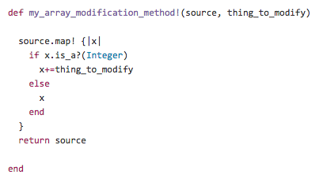

This week has been a pretty intense week for me. We started inplementing Ruby methods into our codes. These methods are such powerful tools that, if implemented correctly, they can solve a relatively complex problem with merely one line of code. That's probably one of the reasons that Ruby is a programming language praised by so many developers.
Enumerable module is a collection of methods in Ruby that provides searching, collecting, and sorting methods for classes that defined an instance method of each. All of the enumerable searching and filtering methods are iterators. To use them, one needs to provide a code block as their selection filter (see example below). Most of time, they return an array that contains the resulting values of their operations, regardless of whether the object being selected from or filtered is an array.
One of the most powerful methods available within the enumerable module is .map. Whenever .map is called, the return object is always going to be an array, which has the same size as the original enumerable. The values of the array could change depending on the accumulatd result of calling the code block on each element in the original object. It is important to note that .map returns a new object, therefore one can use it to return an array of modified values based on the operations specified in the code block. This is also what sets .map apart from .each because the each method returns its receiver, and the value returned by its code block each time through is discarded upon the completion of iteration.
The example above shows that a method called my_array_modification_method is defined with two arguments- a source array and an integer called thing_to_modify. Within the method, I called on .map to iterate through the original source array. Using the code block, the if/else statement checks for whether each element is an integer. If so, value of the element is added by the integer value provided by variable thing_to_modify. The key thing here to note is that by using .map, the source array returned at the end of iteration is modified. However if .each is implemented in this example, the source returned at the end of iteration will be identical to the original source array.